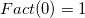

This function is used to calculate the factorial of a non-negative integer, denoted by:
For zero, .
Please note that the largest n is 170. If n is bigger than 170, this function will return missing value. To calculate factorial for the larger integer, you can use the Log_gamma function, which approximates a factorial.
double Fact(int n)
n
Return the factorial of a non-negative integer n.
fact(3) = ; // 6 fact(170) = ; // 7.257415615308E306 fact(171) = ; // n is too big, return missing value --